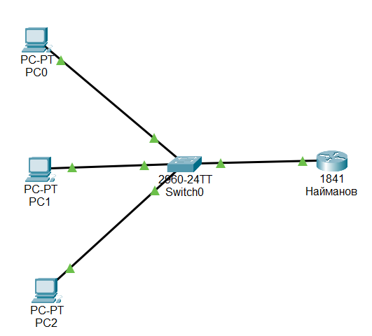
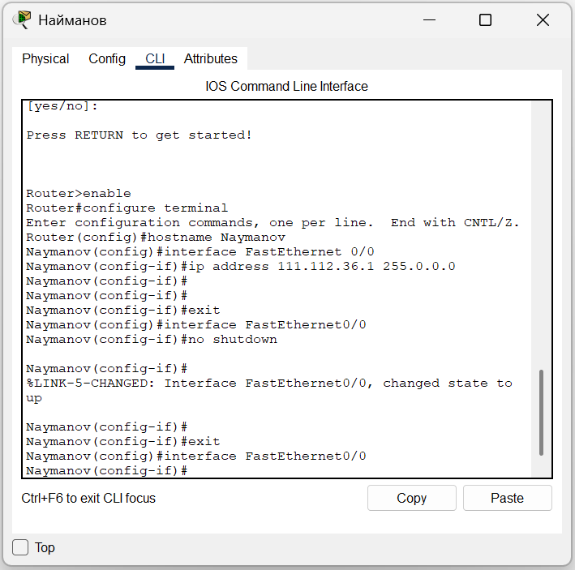
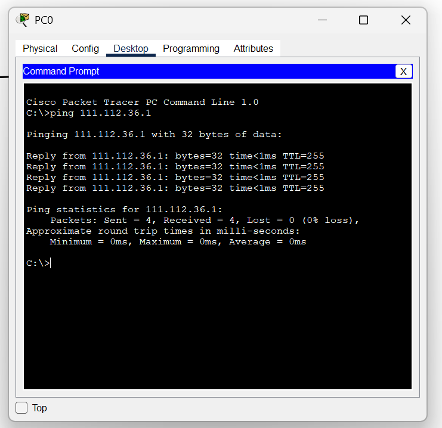

1. Схема подключения
2. Настройка маршрутизатора
Основные изменения:
- Имя хоста изменено на "Naymanov"
- Установлен адрес 111.112.36.1 для подключения к локальной сети
- Активирован сетевой порт
3. Проверка соединения
Результат: Компьютер (111.112.36.2) успешно обменивается данными с маршрутизатором (111.112.36.1), что подтверждает правильность настроек.
Что удалось сделать
- Настроена локальная сеть между компьютерами
- Организован доступ в интернет через маршрутизатор
- Проверена работоспособность соединения
Все задачи лабораторной работы выполнены.
Что здесь: Три компьютера подключены к сетевому коммутатору, который соединён с маршрутизатором. Все адреса в диапазоне 111.112.36.X.